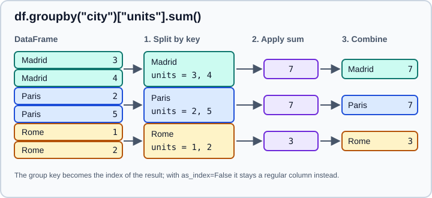

Group By: Split-Apply-Combine
|
This content was generated with the assistance of AI and should be verified against the official documentation before being relied on in production. |
A groupby operation splits a table into groups according to one or more keys, runs a function on every group
and combines the results into a new object. It is the pandas answer to SQL GROUP BY, to the R dplyr::group_by()
verbs (see the R tidyverse page) and to spreadsheet pivot
tables. This page targets pandas 3.1 on Python 3.13 or 3.14 and was checked in October 2026; every example was run
with Python 3.13 and pandas 3.1.0 and the printed output is the real output. The page assumes you know the
DataFrame and the basics of
selection; the related window and resampling tools are in
Rolling, Expanding and EWM and
Resampling and Frequencies.
All examples use the standard imports and one small sales table that contains a missing value, so that the effect of missing data is visible:
import numpy as np
import pandas as pd
df = pd.DataFrame(
{
"city": ["Madrid", "Madrid", "Paris", "Paris", "Rome", "Rome", "Rome"],
"year": [2024, 2025, 2024, 2025, 2024, 2024, 2025],
"sales": [10.0, 12.5, 8.0, np.nan, 5.0, 7.5, 9.0],
"units": [3, 4, 2, 5, 1, 2, 3],
}
)
print(pd.__version__)3.1.0Source: pandas user guide: Group by.
The split-apply-combine model
Every grouped computation has three steps, and knowing which step a method belongs to tells you what shape the result has:
-
Split: the rows are divided into groups. Nothing is computed yet;
df.groupby("city")only validates the keys and records which row belongs to which group, so creating aGroupByobject is cheap and lazy. -
Apply: a function runs on each group. It can aggregate (one value per group), transform (a result with the same shape as the group), filter (keep or drop whole groups) or do something more general with
apply. -
Combine: pandas puts the per-group results together, with the group keys as the index for aggregations.

The four families map onto the shape of what comes back:
| Family | Function returns | Result shape |
|---|---|---|
Aggregation ( |
One value (or one row) per group |
One row per group, indexed by the keys |
Transformation ( |
A result with the same length as the group |
Same index and length as the input |
Filtration ( |
A boolean per group, or a selection of rows |
A subset of the original rows |
General ( |
A scalar, a Series or a DataFrame |
Pandas infers it, which is the most flexible and the most surprising |
Creating a GroupBy object
The by argument accepts several kinds of keys. Passing a list groups by several keys at once.
by is |
Meaning |
|---|---|
A column label, or a list of labels |
Group by the values in those columns |
A Series or array of the same length |
Group by those values (a Series is aligned on the index first) |
A function |
Called once on every index label; the return value is the group key |
A dict or a Series used as a mapping |
Looks every index label up in the mapping |
|
Group by one or more levels of a MultiIndex, or by the index itself |
|
A configurable key, mostly used for time-based grouping |
|
Group numeric values into bins (see Pivot and Pivot Tables) |
g = df.groupby("city")
print(g.ngroups)
print(g.groups)
print(g.get_group("Rome"))3
{'Madrid': [0, 1], 'Paris': [2, 3], 'Rome': [4, 5, 6]}
city year sales units
4 Rome 2024 5.0 1
5 Rome 2024 7.5 2
6 Rome 2025 9.0 3groups is a dict from key to row labels, ngroups the number of groups and get_group returns the rows of one group
as a DataFrame. Iterating over a GroupBy yields one (key, frame) pair per group. Grouping by a
list with one element yields a one-element tuple as the key, which keeps the key type predictable.
for key, frame in df.groupby("city"):
print(repr(key), len(frame))
for key, frame in df.groupby(["city"]):
print(repr(key), len(frame))
break'Madrid' 2
'Paris' 2
'Rome' 3
('Madrid',) 2Grouping by a function, a mapping, an index level or bins works the same way:
s = pd.Series([1, 2, 3, 4], index=["a", "bb", "cc", "d"])
print(s.groupby(len).sum()) # group by label length
print(s.groupby({"a": "x", "bb": "y", "cc": "y", "d": "x"}).sum())
m = df.set_index(["city", "year"])
print(m.groupby(level="city")["units"].sum())
print(df.groupby(pd.cut(df["units"], [0, 2, 5]))["sales"].mean())1 5
2 5
dtype: int64
x 5
y 5
dtype: int64
city
Madrid 7
Paris 7
Rome 6
Name: units, dtype: int64
units
(0, 2] 6.833333
(2, 5] 10.500000
Name: sales, dtype: float64Group keys and the index
Three keyword arguments control how the keys appear in the result:
-
as_index=True(the default) puts the keys in the index.as_index=Falsekeeps them as ordinary columns, which is often what you want before a merge or a plot. -
sort=True(the default) sorts the groups by key.sort=Falsekeeps the order of first appearance and is a little faster; the order of the rows within a group never changes. -
group_keysdecides whether the keys are added to the index of the result ofapplyandtransform-like operations (see Apply).
print(df.groupby(["city", "year"])["sales"].sum())
print(df.groupby(["city", "year"], as_index=False)["sales"].sum())
print(df.groupby("city", sort=False)["units"].sum())city year
Madrid 2024 10.0
2025 12.5
Paris 2024 8.0
2025 0.0
Rome 2024 12.5
2025 9.0
Name: sales, dtype: float64
city year sales
0 Madrid 2024 10.0
1 Madrid 2025 12.5
2 Paris 2024 8.0
3 Paris 2025 0.0
4 Rome 2024 12.5
5 Rome 2025 9.0
city
Madrid 7
Paris 7
Rome 6
Name: units, dtype: int64Aggregation
An aggregation reduces every group to a scalar. The built-in reductions are available as methods and are implemented in compiled code, so they are fast:
| Methods | Meaning |
|---|---|
|
The usual reductions; |
|
Dispersion and shape; |
|
|
|
Pick a row or a label; |
|
Several numbers at once |
|
Boolean reductions |
g = df.groupby("city")
print(g["sales"].sum())
print(g[["sales", "units"]].mean())
print(g.size()) # rows per group, including rows with missing values
print(g.count()) # non-missing values per column
print(df.groupby(["city", "year"])["sales"].sum().loc["Paris"])
print(df.groupby(["city", "year"])["sales"].sum(min_count=1).loc["Paris"])city
Madrid 22.5
Paris 8.0
Rome 21.5
Name: sales, dtype: float64
sales units
city
Madrid 11.250000 3.5
Paris 8.000000 3.5
Rome 7.166667 2.0
city
Madrid 2
Paris 2
Rome 3
dtype: int64
year sales units
city
Madrid 2 2 2
Paris 2 1 2
Rome 3 3 3
year
2024 8.0
2025 0.0
Name: sales, dtype: float64
year
2024 8.0
2025 NaN
Name: sales, dtype: float64Source: pandas user guide: Aggregation.
size() returns a Series with one number per group, count() a DataFrame with the non-missing count of each column.
Paris has two rows but only one non-missing sales value. The Paris group of 2025 has no valid
sales value, so its sum is 0.0 by default and NaN with sum(min_count=1), which keeps "no data" distinguishable from
"zero".
Selecting columns before aggregating (g["sales"] or g[["sales", "units"]]) avoids touching the other columns.
If you aggregate the whole GroupBy, the methods apply to every non-key column, and a column of strings is not
silently dropped:
words = pd.DataFrame({"k": ["a", "a", "b"], "s": ["x", "y", "z"], "v": [1, 2, 3]})
print(words.groupby("k").sum()) # strings are concatenated
print(words.groupby("k").sum(numeric_only=True)) # only numeric columns s v
k
a xy 3
b z 3
v
k
a 3
b 3Source: pandas user guide: Aggregation.
Pass numeric_only=True to restrict a reduction to numeric columns. Aggregating every column is also a quick way to
get a nonsense result such as the sum of years:
print(df.groupby("city").sum()) year sales units
city
Madrid 4049 22.5 7
Paris 4049 8.0 7
Rome 6073 21.5 6Source: pandas user guide: Aggregation.
The year column was summed together with the real measures (2024 + 2025 is not an interesting number), so select the
columns you want explicitly.
agg with several functions
agg (alias aggregate) takes a function name, a function, a list of them or a dict. The result of a list is a
DataFrame with one column per function; passing a list on a column selection gives flat column names.
print(g["sales"].agg(["min", "max", "mean"]))
print(g.agg({"sales": ["sum", "max"], "units": "sum"})) min max mean
city
Madrid 10.0 12.5 11.250000
Paris 8.0 8.0 8.000000
Rome 5.0 9.0 7.166667
sales units
sum max sum
city
Madrid 22.5 12.5 7
Paris 8.0 8.0 7
Rome 21.5 9.0 6Source: pandas user guide: Aggregation.
The dict form on the whole GroupBy produces MultiIndex columns (column, function), which is awkward to work with. Prefer named aggregation, described next.
Named aggregation
Named aggregation gives each output column an explicit name. Pass keyword arguments to agg, where each value is a
(column, function) tuple or a pd.NamedAgg:
out = g.agg(
total_sales=("sales", "sum"),
avg_units=pd.NamedAgg(column="units", aggfunc="mean"),
first_year=("year", "min"),
n_rows=("units", "size"),
)
print(out) total_sales avg_units first_year n_rows
city
Madrid 22.5 3.5 2024 2
Paris 8.0 3.5 2024 2
Rome 21.5 2.0 2024 3The output columns are flat, in the order you wrote them, and names that are not valid Python identifiers can be
passed through a dict: g.agg(**{"first date": ("year", "min")}). A custom function can be used in place of a
string, for instance spread=("sales", lambda s: s.max() - s.min()). Lambdas get the name <lambda> in a list, so two
of them collide; in a list you can give names with [("rng", func), "mean"], but with named aggregation the keyword is
the name and there is no problem.
Source: pandas user guide: Aggregation and pandas.NamedAgg.
Transformation
A transformation returns a result indexed like the input, so you can assign it back as a new column. The classic uses are normalisation within a group, filling missing values with a group statistic, and expressing every row as a share of its group.
g = df.groupby("city")
res = df.assign(
sales_share=g["sales"].transform(lambda s: s / s.sum()),
city_units=g["units"].transform("sum"), # a string runs the fast built-in
units_z=g["units"].transform(lambda s: (s - s.mean()) / s.std()),
)
print(res.round(3)) city year sales units sales_share city_units units_z
0 Madrid 2024 10.0 3 0.444 7 -0.707
1 Madrid 2025 12.5 4 0.556 7 0.707
2 Paris 2024 8.0 2 1.000 7 -0.707
3 Paris 2025 NaN 5 NaN 7 0.707
4 Rome 2024 5.0 1 0.233 6 -1.000
5 Rome 2024 7.5 2 0.349 6 0.000
6 Rome 2025 9.0 3 0.419 6 1.000Source: pandas user guide: Transformation.
transform accepts a function name (preferred, because it can use the optimised implementation), a callable that
returns either a scalar (broadcast to the group) or a result of the same length as the group, or a list or dict of
functions. A function that changes the length raises ValueError.
Many methods are transformations in disguise: cumsum, cumprod, cummax, cummin, cumcount, ngroup, rank,
shift, diff, pct_change, ffill, bfill and fillna. They run per group without a lambda:
print(g["units"].shift(1).tolist()) # previous row within the group
print(g["sales"].pct_change().round(3).tolist()) # NaN where there is no previous row
print(g["units"].cumsum().tolist())
print(g["sales"].rank().tolist())
print(g.cumcount().tolist(), g.ngroup().tolist()) # position inside the group, group number
print(g["sales"].ffill().tolist()) # forward fill never crosses groups[nan, 3.0, nan, 2.0, nan, 1.0, 2.0]
[nan, 0.25, nan, nan, nan, 0.5, 0.2]
[3, 7, 2, 7, 1, 3, 6]
[1.0, 2.0, 1.0, nan, 1.0, 2.0, 3.0]
[0, 1, 0, 1, 0, 1, 2] [0, 0, 1, 1, 2, 2, 2]
[10.0, 12.5, 8.0, 8.0, 5.0, 7.5, 9.0]cumcount numbers the rows inside each group (0, 1, 2, …), and cumcount(ascending=False) counts down, which is
handy to find the last row of each group. ngroup numbers the groups themselves.
Source: pandas user guide: Transformation.
Filtration
filter keeps or drops whole groups. The function receives each group and returns a single boolean:
big = g.filter(lambda frame: frame["units"].sum() > 6)
print(big) city year sales units
0 Madrid 2024 10.0 3
1 Madrid 2025 12.5 4
2 Paris 2024 8.0 2
3 Paris 2025 NaN 5Source: pandas user guide: Filtration.
Rome has only six units in total, so it is dropped; the rows of Madrid and Paris keep their original index. Pass
dropna=False to keep the dropped rows as NaN instead of removing them.
Methods that select individual rows are also grouped operations. head(n) and tail(n) return the first or last n
rows of every group, nth picks by position, and sample draws random rows per group (use random_state for a
reproducible draw):
print(g.head(1)) # first row of each group
print(g.nth(-1)) # last row of each group
print(g.nth([0, 1]).shape) # first two rows of each group
print(g.sample(1, random_state=0).shape)
print(g["sales"].first().tolist(), g["sales"].last().tolist(), g["sales"].last(skipna=False).tolist()) city year sales units
0 Madrid 2024 10.0 3
2 Paris 2024 8.0 2
4 Rome 2024 5.0 1
city year sales units
1 Madrid 2025 12.5 4
3 Paris 2025 NaN 5
6 Rome 2025 9.0 3
(6, 4)
(3, 4)
[10.0, 8.0, 5.0] [12.5, 8.0, 9.0] [12.5, nan, 9.0]Source: pandas user guide: Filtration.
These return rows with their original index, so the result looks like a filtered copy of the table, not like an
aggregation. first() and last() return the first and last non-missing value of every column per group, which can
come from different rows; nth returns whole rows. The bracket form GroupBy.nth[...] is deprecated in pandas 3.1
(a Pandas4Warning); call nth(...) instead.
Apply
apply is the general escape hatch: pandas calls the function on every group and then infers how to combine the
results. It can return a scalar (one value per group), a Series, or a DataFrame (the pieces are concatenated). Because
the shape of the result depends on what the function returns, apply is also the slowest and the least predictable
method. Use a built-in aggregation, agg, transform or filter whenever one of them fits.
top = g[["year", "sales", "units"]].apply(lambda frame: frame.nlargest(1, "units"))
print(top)
print(g[["units"]].apply(lambda frame: frame["units"].max() - frame["units"].min())) year sales units
city
Madrid 1 2025 12.5 4
Paris 3 2025 NaN 5
Rome 6 2025 9.0 3
city
Madrid 1
Paris 3
Rome 2
dtype: int64Source: pandas user guide: Flexible apply.
One thing changed in pandas 3.0 and matters for old code:
-
The function now receives the group without the grouping columns.
DataFrameGroupBy.applyhas the argumentinclude_groups=Falseas its default, andinclude_groups=TrueraisesValueError. Selecting the columns you need (as ing[["year", "sales", "units"]]) is the clearest way to be explicit, and if the function needs the key, take it fromframe.name.
group_keys decides whether the keys prefix the index of the result. When the function returns objects indexed like the
input (a filter-like result), group_keys=False keeps the original index and avoids the extra index level:
print(g[["units"]].apply(lambda frame: frame.head(1), include_groups=False))
print(df.groupby("city", group_keys=False)[["units"]].apply(lambda frame: frame.head(1))) units
city
Madrid 0 3
Paris 2 2
Rome 4 1
units
0 3
2 2
4 1Source: pandas user guide: Flexible apply.
Passing extra arguments works through *args and **kwargs of apply, agg and transform, and pipe lets you
chain a function that takes the whole GroupBy: g.pipe(lambda x: x["units"].sum()). See
User-Defined Functions for how the UDF methods compare.
Missing keys: dropna
By default rows whose key is missing (NaN, None, NaT, pd.NA) are excluded from the result. This can silently
drop data; set dropna=False to keep the missing key as its own group:
d2 = pd.DataFrame({"k": ["a", None, "b", "a"], "v": [1, 2, 3, 4]})
print(d2.groupby("k")["v"].sum())
print(d2.groupby("k", dropna=False)["v"].sum())k
a 5
b 3
Name: v, dtype: int64
k
a 5
b 3
NaN 2
Name: v, dtype: int64Missing values in the measure columns are a different matter: reductions skip them by default, and size counts
them. Compare the total row count with count() to find out how much data a reduction ignored.
Categorical keys and observed
When a key is a Categorical, the categories exist even if no row has them. Until pandas 2.x the default
observed=False returned every category (the Cartesian product when several keys are categorical), which could
create huge, mostly empty results. In pandas 3.0 the default is observed=True, which returns only the combinations
present in the data; pass observed=False to get the old, complete result.
cat = pd.Categorical(["x", "y", "x"], categories=["x", "y", "z"])
d3 = pd.DataFrame({"c": cat, "v": [1, 2, 3]})
print(d3.groupby("c")["v"].sum()) # observed=True: no row for "z"
print(d3.groupby("c", observed=False)["v"].sum()) # every category, empty groups get 0
cat2 = pd.Categorical(["u", "u", "v"], categories=["u", "v"])
d4 = pd.DataFrame({"c": cat, "d": cat2, "v": [1, 2, 3]})
print(d4.groupby(["c", "d"])["v"].sum().shape)
print(d4.groupby(["c", "d"], observed=False)["v"].sum().shape)c
x 4
y 2
Name: v, dtype: int64
c
x 4
y 2
z 0
Name: v, dtype: int64
(3,)
(6,)With two categorical keys the difference is larger (three categories times two is six rows against the three present): observed=False returns the full product of categories, even if
only a few combinations exist. Keep the default for large categorical
keys and use observed=False only when you need a complete grid, for example for a report with fixed rows.
Time-based grouping with Grouper
pd.Grouper(key=..., freq=...) groups a datetime column by a frequency. Use it when the time key is one of several keys;
for a single time key on the index, resample is shorter (see
Resampling and Frequencies).
ts = pd.DataFrame(
{
"t": pd.date_range("2026-01-01", periods=8, freq="D"),
"k": list("abababab"),
"v": range(8),
}
)
print(ts.groupby(["k", pd.Grouper(key="t", freq="W-SUN")])["v"].sum())
print(ts.set_index("t").groupby(pd.Grouper(freq="ME"))["v"].agg(["sum", "count"]))k t
a 2026-01-04 2
2026-01-11 10
b 2026-01-04 4
2026-01-11 12
Name: v, dtype: int64
sum count
t
2026-01-31 28 8Source: pandas.Grouper.
The frequency uses the pandas 3 aliases (ME, W-SUN, h, min); the old M, H and T raise an error. Extra
keywords such as closed, label, origin and offset are passed to the underlying time grouper. The
pd.TimeGrouper alias that appeared in old books no longer exists: use pd.Grouper. You can also group by a
derived key without a Grouper, for instance ts.groupby(ts["t"].dt.day_of_week >= 5), or by period with
ts["t"].dt.to_period("W").
Windows inside groups
Grouped rolling, expanding and EWM windows compute the window within each group, with the group key as an extra index level:
w = pd.DataFrame({"k": list("aaabbb"), "v": [1, 2, 3, 10, 20, 30]})
print(w.groupby("k")["v"].rolling(2).mean())
print(w.groupby("k")["v"].transform(lambda s: s.rolling(2).mean()).tolist())k
a 0 NaN
1 1.5
2 2.5
b 3 NaN
4 15.0
5 25.0
Name: v, dtype: float64
[nan, 1.5, 2.5, nan, 15.0, 25.0]The first form returns a MultiIndex result; the transform form returns a result aligned with the original rows,
which is what you usually want for a new column. See Rolling, Expanding and EWM.
The numba engine
agg and transform on a GroupBy accept engine="numba" and engine_kwargs. The function must then have the
signature (values, index, ...) and be written in the subset of Python that numba compiles:
try:
spread = ts.groupby("k")["v"].agg(lambda values, index: values.max() - values.min(), engine="numba")
print(spread.tolist())
except ImportError as exc:
print("numba is not installed:", exc)[6.0, 6.0]Source: DataFrameGroupBy.agg.
Numba must be installed (it is an optional dependency, installed with the performance extra), and the first call pays
a compilation cost, so the engine only pays off for large data and functions that run many times. See
Enhancing Performance.
Common pitfalls
-
Forgetting that GroupBy is lazy.
df.groupby("city")computes nothing; errors in the function appear at the aggregation call. -
Aggregating every column. Select the measures first; otherwise identifiers such as years are summed and strings are concatenated.
-
Dropped missing keys. The default
dropna=Trueremoves rows without a key from the result; checkdf["key"].isna().sum(). -
Slow
apply. A Python function called once per group is fine for a few hundred groups and painful for a million. Prefer built-in methods, which run in compiled code, andtransform("sum")over a lambda. -
Chained assignment.
g = df.groupby("city"); df["a"][mask] = 1never writes back; assign withdf.loc[mask, "a"](Copy-on-Write is the only mode in pandas 3). -
Using the lambda name as a column. Two
lambdaentries in anagglist collide; name them with named aggregation.
What changed since older books and tutorials
| Older code | Status in pandas 3.1 | Replace with |
|---|---|---|
|
The |
Transpose, or group the columns with a mapping through |
Default |
|
Pass |
|
|
Select columns before |
|
Removed long ago |
|
|
Removed |
Index the result explicitly |
|
|
|
Frequency aliases |
Removed in 3.0 ( |
|
|
Removed |
Named aggregation |